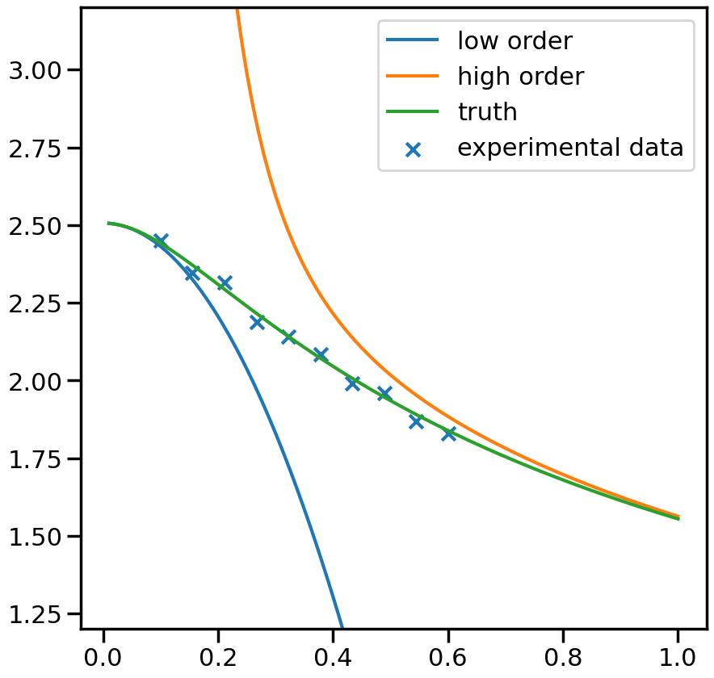
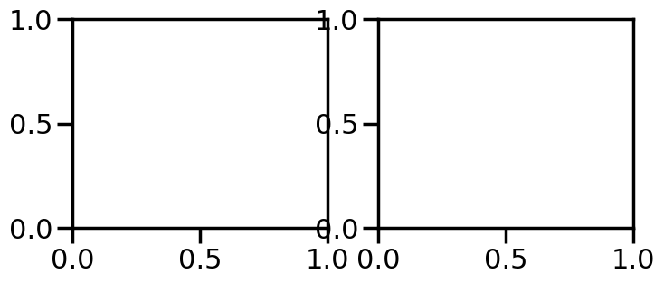
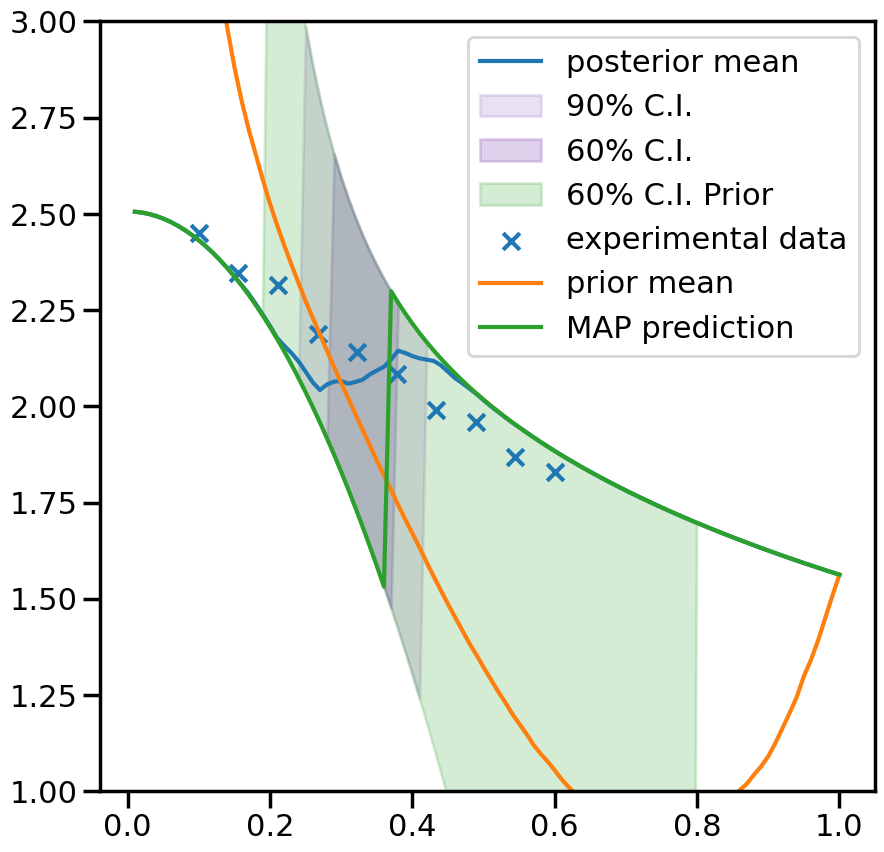

Linear Bivariate BMM with SAMBA toy models : step mixing
The best way to learn Taweret is to use it. You can run, modify and experiment with this notebook on GitHub Codespaces.
This notebook shows how to use the Bayesian model mixing package Taweret for a toy problem.
Author : Dan Liyanage
Date : 11/10/2022
More about SAMBA toy models can be found in Uncertainties here, there, and everywhere: interpolating between small- and large-g expansions using Bayesian Model Mixing
[1]:
import sys
import os
# You will have to change the following imports depending on where you have
# the packages installed
cwd = os.getcwd()
# Get the first part of this path and append to the sys.path
tw_path = cwd.split("Taweret/")[0] + "Taweret"
samba_path = tw_path + "/subpackages/SAMBA"
sys.path.append(tw_path)
sys.path.append(samba_path)
# For plotting
import matplotlib.pyplot as plt
import seaborn as sns
sns.set_context('poster')
# To define priors. (uncoment if not using default priors)
#import bilby
# For other operations
import numpy as np
1. Get toy models and the pseudo-experimental data
[2]:
# Toy models from SAMBA
from Taweret.models import samba_models as toy_models
m1 = toy_models.Loworder(2, 'uninformative')
m2 = toy_models.Highorder(2, 'uninformative')
truth = toy_models.TrueModel()
exp = toy_models.Data()
[3]:
g = np.linspace(0.1, 0.6, 10)
plot_g = np.linspace(0.01,1,100)
m1_prediction = m1.evaluate(plot_g)
m2_prediction = m2.evaluate(plot_g)
true_output = truth.evaluate(plot_g)
exp_data= exp.evaluate(g,error = 0.01)
/Users/dananjayaliyanage/temp2/Taweret/Taweret/models/samba_models.py:333: RuntimeWarning: invalid value encountered in reciprocal
* self.x**(-2.0*self.order - 2)
[4]:
fig, ax_f = plt.subplots(figsize=(10,10))
ax_f.plot(plot_g, m1_prediction[0].flatten(), label='low order')
ax_f.plot(plot_g, m2_prediction[0].flatten(), label='high order')
ax_f.plot(plot_g, true_output[0], label='truth')
ax_f.scatter(g,exp_data[0], marker='x', label='experimental data')
ax_f.set_ylim(1.2,3.2)
ax_f.legend()
[4]:
<matplotlib.legend.Legend at 0x7fc8db24ba50>

2. Choose a Mixing method
[5]:
from Taweret.core.base_model import BaseModel
isinstance(m1, BaseModel)
[5]:
True
[6]:
# Mixing method
from Taweret.mix.bivariate_linear import BivariateLinear as BL
models= {'low_order':m1,'high_order':m2}
mix_model = BL(models_dic=models, method='step')
step mixing function has 1 free parameter(s)
Warning : Default prior is set to {'step_0': Uniform(minimum=0, maximum=1, name='step_0', latex_label='step_0', unit=None, boundary=None)}
To change the prior use `set_prior` method
[ ]:
[7]:
#uncoment to change the prior from the default
#priors = bilby.core.prior.PriorDict()
#priors['step_0'] = bilby.core.prior.Uniform(0, 1, name="step_0")
#mix_model.set_prior(priors)
3. Train to find posterior
[9]:
y_exp = np.array(exp_data[0]).reshape(1,-1)
y_err = np.array(exp_data[1]).reshape(1,-1)
# The parameters are set to minimum values for computational ease.
# You should increase the ntemps, nwalkers and nsamples and see
# if your results are changing. If so keep increasing them
# until convergence of results.
kwargs_for_sampler = {'sampler': 'ptemcee',
'ntemps': 5,
'nwalkers': 50,
'Tmax': 100,
'burn_in_fixed_discard': 50,
'nsamples': 2000,
'threads': 6,
'printdt': 60}
result = mix_model.train(x_exp=g, y_exp=y_exp, y_err=y_err, outdir = 'outdir/samba_bivaraite', label='step_mix',
kwargs_for_sampler=kwargs_for_sampler)
15:29 bilby INFO : Running for label 'step_mix', output will be saved to 'outdir/samba_bivaraite'
15:29 bilby INFO : Search parameters:
15:29 bilby INFO : step_0 = Uniform(minimum=0, maximum=1, name='step_0', latex_label='step_0', unit=None, boundary=None)
The following settings were provided for sampler
{'sampler': 'ptemcee', 'ntemps': 5, 'nwalkers': 50, 'Tmax': 100, 'burn_in_fixed_discard': 50, 'nsamples': 2000, 'threads': 6, 'printdt': 60}
15:29 bilby INFO : Single likelihood evaluation took 1.493e-03 s
15:29 bilby WARNING : Supplied argument 'printdt' not an argument of 'Ptemcee', removing.
15:29 bilby INFO : Using sampler Ptemcee with kwargs {'ntemps': 5, 'nwalkers': 50, 'Tmax': 100, 'betas': None, 'a': 2.0, 'adaptation_lag': 10000, 'adaptation_time': 100, 'random': None, 'adapt': False, 'swap_ratios': False}
15:29 bilby INFO : Using convergence inputs: ConvergenceInputs(autocorr_c=5, autocorr_tol=50, autocorr_tau=1, gradient_tau=0.1, gradient_mean_log_posterior=0.1, Q_tol=1.02, safety=1, burn_in_nact=50, burn_in_fixed_discard=50, mean_logl_frac=0.01, thin_by_nact=0.5, nsamples=2000, ignore_keys_for_tau=None, min_tau=1, niterations_per_check=5)
15:29 bilby INFO : Generating pos0 samples
15:29 bilby INFO : Starting to sample
1|0:00:00|nc:1.2e+03|a0:0.20-1.00|swp:0.61-0.93|n:nan<2000|t!nan(+nan,+nan)|q:inf|0.26ms/ev
2|0:00:00|nc:2.5e+03|a0:0.30-1.00|swp:0.58-0.94|n:nan<2000|t!nan(+nan,+nan)|q:inf|0.36ms/ev
3|0:00:01|nc:3.8e+03|a0:0.40-1.00|swp:0.57-0.93|n:nan<2000|t!nan(+nan,+nan)|q:inf|0.32ms/ev
4|0:00:01|nc:5.0e+03|a0:0.50-1.00|swp:0.57-0.93|n:nan<2000|t!nan(+nan,+nan)|q:inf|0.31ms/ev
5|0:00:01|nc:6.2e+03|a0:0.52-0.92|swp:0.57-0.93|n:nan<2000|t!nan(+nan,+nan)|q:inf|0.24ms/ev
6|0:00:02|nc:7.5e+03|a0:0.53-0.90|swp:0.57-0.92|n:nan<2000|t!nan(+nan,+nan)|q:inf|0.27ms/ev
7|0:00:02|nc:8.8e+03|a0:0.57-0.89|swp:0.58-0.92|n:nan<2000|t!nan(+nan,+nan)|q:inf|0.28ms/ev
8|0:00:02|nc:1.0e+04|a0:0.60-0.88|swp:0.59-0.93|n:nan<2000|t!nan(+nan,+nan)|q:inf|0.29ms/ev
9|0:00:03|nc:1.1e+04|a0:0.56-0.87|swp:0.59-0.93|n:nan<2000|t!nan(+nan,+nan)|q:inf|0.27ms/ev
10|0:00:03|nc:1.2e+04|a0:0.58-0.88|swp:0.60-0.93|n:nan<2000|t!nan(+nan,+nan)|q:inf|0.23ms/ev
11|0:00:03|nc:1.4e+04|a0:0.58-0.87|swp:0.60-0.93|n:nan<2000|t!nan(+nan,+nan)|q:inf|0.20ms/ev
12|0:00:03|nc:1.5e+04|a0:0.62-0.87|swp:0.60-0.93|n:nan<2000|t!nan(+nan,+nan)|q:inf|0.18ms/ev
13|0:00:04|nc:1.6e+04|a0:0.60-0.88|swp:0.60-0.93|n:nan<2000|t!nan(+nan,+nan)|q:inf|0.19ms/ev
14|0:00:04|nc:1.8e+04|a0:0.61-0.87|swp:0.60-0.93|n:nan<2000|t!nan(+nan,+nan)|q:inf|0.20ms/ev
15|0:00:04|nc:1.9e+04|a0:0.61-0.85|swp:0.60-0.92|n:nan<2000|t!nan(+nan,+nan)|q:inf|0.20ms/ev
16|0:00:04|nc:2.0e+04|a0:0.62-0.85|swp:0.60-0.92|n:nan<2000|t!nan(+nan,+nan)|q:inf|0.19ms/ev
17|0:00:05|nc:2.1e+04|a0:0.64-0.85|swp:0.61-0.92|n:nan<2000|t!nan(+nan,+nan)|q:inf|0.19ms/ev
18|0:00:05|nc:2.2e+04|a0:0.63-0.84|swp:0.61-0.92|n:nan<2000|t!nan(+nan,+nan)|q:inf|0.21ms/ev
19|0:00:05|nc:2.4e+04|a0:0.63-0.85|swp:0.61-0.92|n:nan<2000|t!nan(+nan,+nan)|q:inf|0.24ms/ev
20|0:00:06|nc:2.5e+04|a0:0.63-0.84|swp:0.61-0.92|n:nan<2000|t!nan(+nan,+nan)|q:inf|0.25ms/ev
21|0:00:06|nc:2.6e+04|a0:0.64-0.82|swp:0.61-0.93|n:nan<2000|t!nan(+nan,+nan)|q:inf|0.25ms/ev
22|0:00:06|nc:2.8e+04|a0:0.64-0.82|swp:0.61-0.93|n:nan<2000|t!nan(+nan,+nan)|q:inf|0.24ms/ev
23|0:00:07|nc:2.9e+04|a0:0.65-0.83|swp:0.61-0.93|n:nan<2000|t!nan(+nan,+nan)|q:inf|0.27ms/ev
24|0:00:07|nc:3.0e+04|a0:0.66-0.82|swp:0.61-0.93|n:nan<2000|t!nan(+nan,+nan)|q:inf|0.26ms/ev
25|0:00:07|nc:3.1e+04|a0:0.64-0.82|swp:0.61-0.93|n:nan<2000|t!nan(+nan,+nan)|q:inf|0.25ms/ev
26|0:00:07|nc:3.2e+04|a0:0.63-0.82|swp:0.61-0.93|n:nan<2000|t!nan(+nan,+nan)|q:inf|0.23ms/ev
27|0:00:08|nc:3.4e+04|a0:0.63-0.83|swp:0.61-0.93|n:nan<2000|t!nan(+nan,+nan)|q:inf|0.28ms/ev
28|0:00:08|nc:3.5e+04|a0:0.64-0.82|swp:0.61-0.93|n:nan<2000|t!nan(+nan,+nan)|q:inf|0.27ms/ev
29|0:00:08|nc:3.6e+04|a0:0.65-0.83|swp:0.62-0.93|n:nan<2000|t!nan(+nan,+nan)|q:inf|0.25ms/ev
30|0:00:09|nc:3.8e+04|a0:0.65-0.83|swp:0.61-0.93|n:nan<2000|t!nan(+nan,+nan)|q:inf|0.20ms/ev
31|0:00:09|nc:3.9e+04|a0:0.65-0.84|swp:0.61-0.93|n:nan<2000|t!nan(+nan,+nan)|q:inf|0.20ms/ev
32|0:00:09|nc:4.0e+04|a0:0.66-0.84|swp:0.61-0.93|n:nan<2000|t!nan(+nan,+nan)|q:inf|0.20ms/ev
33|0:00:09|nc:4.1e+04|a0:0.67-0.84|swp:0.61-0.93|n:nan<2000|t!nan(+nan,+nan)|q:inf|0.19ms/ev
34|0:00:10|nc:4.2e+04|a0:0.66-0.84|swp:0.61-0.93|n:nan<2000|t!nan(+nan,+nan)|q:inf|0.19ms/ev
35|0:00:10|nc:4.4e+04|a0:0.66-0.83|swp:0.62-0.93|n:nan<2000|t!nan(+nan,+nan)|q:inf|0.19ms/ev
36|0:00:10|nc:4.5e+04|a0:0.66-0.82|swp:0.61-0.92|n:nan<2000|t!nan(+nan,+nan)|q:inf|0.19ms/ev
37|0:00:10|nc:4.6e+04|a0:0.66-0.82|swp:0.61-0.92|n:nan<2000|t!nan(+nan,+nan)|q:inf|0.19ms/ev
38|0:00:11|nc:4.8e+04|a0:0.67-0.82|swp:0.62-0.93|n:nan<2000|t!nan(+nan,+nan)|q:inf|0.19ms/ev
39|0:00:11|nc:4.9e+04|a0:0.67-0.83|swp:0.62-0.93|n:nan<2000|t!nan(+nan,+nan)|q:inf|0.19ms/ev
40|0:00:11|nc:5.0e+04|a0:0.68-0.82|swp:0.62-0.93|n:nan<2000|t!nan(+nan,+nan)|q:inf|0.19ms/ev
41|0:00:11|nc:5.1e+04|a0:0.67-0.82|swp:0.62-0.93|n:nan<2000|t!nan(+nan,+nan)|q:inf|0.19ms/ev
42|0:00:12|nc:5.2e+04|a0:0.68-0.83|swp:0.62-0.93|n:nan<2000|t!nan(+nan,+nan)|q:inf|0.19ms/ev
43|0:00:12|nc:5.4e+04|a0:0.68-0.83|swp:0.62-0.93|n:nan<2000|t!nan(+nan,+nan)|q:inf|0.19ms/ev
44|0:00:12|nc:5.5e+04|a0:0.69-0.83|swp:0.62-0.93|n:nan<2000|t!nan(+nan,+nan)|q:inf|0.19ms/ev
45|0:00:12|nc:5.6e+04|a0:0.69-0.82|swp:0.62-0.93|n:nan<2000|t!nan(+nan,+nan)|q:inf|0.19ms/ev
46|0:00:12|nc:5.8e+04|a0:0.69-0.83|swp:0.62-0.93|n:nan<2000|t!nan(+nan,+nan)|q:inf|0.20ms/ev
47|0:00:13|nc:5.9e+04|a0:0.69-0.82|swp:0.62-0.93|n:nan<2000|t!nan(+nan,+nan)|q:inf|0.19ms/ev
48|0:00:13|nc:6.0e+04|a0:0.68-0.82|swp:0.62-0.93|n:nan<2000|t!nan(+nan,+nan)|q:inf|0.20ms/ev
49|0:00:13|nc:6.1e+04|a0:0.69-0.82|swp:0.62-0.93|n:nan<2000|t!nan(+nan,+nan)|q:inf|0.21ms/ev
50|0:00:14|nc:6.2e+04|a0:0.69-0.82|swp:0.62-0.93|n:nan<2000|t!nan(+nan,+nan)|q:inf|0.23ms/ev
51|0:00:14|nc:6.4e+04|a0:0.69-0.82|swp:0.62-0.93|n:nan<2000|t!nan(+nan,+nan)|q:inf|0.25ms/ev
52|0:00:14|nc:6.5e+04|a0:0.68-0.82|swp:0.62-0.93|n:nan<2000|t!nan(+nan,+nan)|q:inf|0.25ms/ev
53|0:00:15|nc:6.6e+04|a0:0.69-0.82|swp:0.62-0.93|n:nan<2000|t!nan(+nan,+nan)|q:inf|0.25ms/ev
54|0:00:15|nc:6.8e+04|a0:0.69-0.82|swp:0.62-0.93|n:nan<2000|t!nan(+nan,+nan)|q:inf|0.22ms/ev
55|0:00:15|nc:6.9e+04|a0:0.69-0.82|swp:0.62-0.93|n:nan<2000|t!nan(+nan,+nan)|q:inf|0.22ms/ev
56|0:00:15|nc:7.0e+04|a0:0.69-0.82|swp:0.62-0.92|n:nan<2000|t!nan(+nan,+nan)|q:inf|0.22ms/ev
57|0:00:16|nc:7.1e+04|a0:0.69-0.82|swp:0.62-0.93|n:nan<2000|t!nan(+nan,+nan)|q:inf|0.22ms/ev
58|0:00:16|nc:7.2e+04|a0:0.69-0.82|swp:0.62-0.93|n:nan<2000|t!nan(+nan,+nan)|q:inf|0.22ms/ev
59|0:00:16|nc:7.4e+04|a0:0.69-0.82|swp:0.62-0.92|n:nan<2000|t!nan(+nan,+nan)|q:inf|0.22ms/ev
60|0:00:16|nc:7.5e+04|a0:0.69-0.82|swp:0.62-0.92|n:nan<2000|t!nan(+nan,+nan)|q:inf|0.22ms/ev
61|0:00:17|nc:7.6e+04|a0:0.70-0.82|swp:0.62-0.92|n:nan<2000|t!nan(+nan,+nan)|q:inf|0.21ms/ev
62|0:00:17|nc:7.8e+04|a0:0.70-0.82|swp:0.62-0.92|n:nan<2000|t!nan(+nan,+nan)|q:inf|0.19ms/ev
63|0:00:17|nc:7.9e+04|a0:0.70-0.81|swp:0.62-0.92|n:nan<2000|t!nan(+nan,+nan)|q:inf|0.19ms/ev
64|0:00:17|nc:8.0e+04|a0:0.71-0.81|swp:0.62-0.92|n:nan<2000|t!nan(+nan,+nan)|q:inf|0.20ms/ev
65|0:00:18|nc:8.1e+04|a0:0.71-0.80|swp:0.62-0.93|n:nan<2000|t!nan(+nan,+nan)|q:inf|0.21ms/ev
66|0:00:18|nc:8.2e+04|a0:0.71-0.80|swp:0.62-0.93|n:nan<2000|t!nan(+nan,+nan)|q:inf|0.21ms/ev
67|0:00:18|nc:8.4e+04|a0:0.71-0.81|swp:0.62-0.93|n:nan<2000|t!nan(+nan,+nan)|q:inf|0.21ms/ev
68|0:00:18|nc:8.5e+04|a0:0.71-0.81|swp:0.62-0.93|n:nan<2000|t!nan(+nan,+nan)|q:inf|0.21ms/ev
69|0:00:19|nc:8.6e+04|a0:0.70-0.81|swp:0.62-0.93|n:nan<2000|t!nan(+nan,+nan)|q:inf|0.22ms/ev
70|0:00:19|nc:8.8e+04|a0:0.70-0.81|swp:0.62-0.93|n:nan<2000|t!nan(+nan,+nan)|q:inf|0.24ms/ev
71|0:00:19|nc:8.9e+04|a0:0.70-0.81|swp:0.62-0.93|n:nan<2000|t!nan(+nan,+nan)|q:inf|0.27ms/ev
72|0:00:20|nc:9.0e+04|a0:0.70-0.81|swp:0.62-0.93|n:nan<2000|t!nan(+nan,+nan)|q:inf|0.29ms/ev
73|0:00:20|nc:9.1e+04|a0:0.70-0.81|swp:0.62-0.92|n:nan<2000|t!nan(+nan,+nan)|q:inf|0.29ms/ev
74|0:00:20|nc:9.2e+04|a0:0.70-0.80|swp:0.61-0.93|n:nan<2000|t!nan(+nan,+nan)|q:inf|0.26ms/ev
75|0:00:21|nc:9.4e+04|a0:0.70-0.80|swp:0.62-0.93|n:nan<2000|t!nan(+nan,+nan)|q:inf|0.24ms/ev
76|0:00:21|nc:9.5e+04|a0:0.70-0.80|swp:0.61-0.93|n:nan<2000|t!nan(+nan,+nan)|q:inf|0.21ms/ev
77|0:00:21|nc:9.6e+04|a0:0.70-0.80|swp:0.61-0.93|n:nan<2000|t!nan(+nan,+nan)|q:inf|0.21ms/ev
78|0:00:21|nc:9.8e+04|a0:0.69-0.80|swp:0.61-0.93|n:nan<2000|t!nan(+nan,+nan)|q:inf|0.21ms/ev
79|0:00:22|nc:9.9e+04|a0:0.69-0.80|swp:0.61-0.93|n:nan<2000|t!nan(+nan,+nan)|q:inf|0.21ms/ev
80|0:00:22|nc:1.0e+05|a0:0.69-0.80|swp:0.61-0.93|n:nan<2000|t!nan(+nan,+nan)|q:inf|0.24ms/ev
81|0:00:22|nc:1.0e+05|a0:0.69-0.80|swp:0.61-0.93|n:nan<2000|t!nan(+nan,+nan)|q:inf|0.25ms/ev
82|0:00:23|nc:1.0e+05|a0:0.69-0.80|swp:0.61-0.93|n:nan<2000|t!nan(+nan,+nan)|q:inf|0.26ms/ev
83|0:00:23|nc:1.0e+05|a0:0.69-0.80|swp:0.61-0.93|n:nan<2000|t!nan(+nan,+nan)|q:inf|0.22ms/ev
84|0:00:23|nc:1.0e+05|a0:0.70-0.80|swp:0.61-0.93|n:nan<2000|t!nan(+nan,+nan)|q:inf|0.21ms/ev
85|0:00:23|nc:1.1e+05|a0:0.70-0.80|swp:0.61-0.93|n:nan<2000|t!nan(+nan,+nan)|q:inf|0.21ms/ev
86|0:00:24|nc:1.1e+05|a0:0.70-0.80|swp:0.61-0.93|n:nan<2000|t!nan(+nan,+nan)|q:inf|0.20ms/ev
87|0:00:24|nc:1.1e+05|a0:0.69-0.80|swp:0.61-0.93|n:nan<2000|t!nan(+nan,+nan)|q:inf|0.19ms/ev
88|0:00:24|nc:1.1e+05|a0:0.70-0.81|swp:0.61-0.93|n:nan<2000|t!nan(+nan,+nan)|q:inf|0.19ms/ev
89|0:00:24|nc:1.1e+05|a0:0.70-0.80|swp:0.61-0.93|n:nan<2000|t!nan(+nan,+nan)|q:inf|0.19ms/ev
90|0:00:25|nc:1.1e+05|a0:0.70-0.80|swp:0.61-0.93|n:nan<2000|t!nan(+nan,+nan)|q:inf|0.19ms/ev
91|0:00:25|nc:1.1e+05|a0:0.69-0.80|swp:0.61-0.93|n:nan<2000|t!nan(+nan,+nan)|q:inf|0.19ms/ev
92|0:00:25|nc:1.2e+05|a0:0.69-0.80|swp:0.61-0.93|n:nan<2000|t!nan(+nan,+nan)|q:inf|0.18ms/ev
93|0:00:25|nc:1.2e+05|a0:0.69-0.80|swp:0.61-0.93|n:nan<2000|t!nan(+nan,+nan)|q:inf|0.18ms/ev
94|0:00:26|nc:1.2e+05|a0:0.69-0.80|swp:0.61-0.93|n:nan<2000|t!nan(+nan,+nan)|q:inf|0.19ms/ev
95|0:00:26|nc:1.2e+05|a0:0.69-0.80|swp:0.61-0.93|n:nan<2000|t!nan(+nan,+nan)|q:inf|0.20ms/ev
96|0:00:26|nc:1.2e+05|a0:0.69-0.80|swp:0.61-0.93|n:nan<2000|t!nan(+nan,+nan)|q:inf|0.20ms/ev
97|0:00:26|nc:1.2e+05|a0:0.69-0.80|swp:0.61-0.93|n:nan<2000|t!nan(+nan,+nan)|q:inf|0.20ms/ev
98|0:00:27|nc:1.2e+05|a0:0.70-0.80|swp:0.62-0.93|n:nan<2000|t!nan(+nan,+nan)|q:inf|0.20ms/ev
99|0:00:27|nc:1.2e+05|a0:0.69-0.80|swp:0.62-0.93|n:nan<2000|t!nan(+nan,+nan)|q:inf|0.20ms/ev
100|0:00:27|nc:1.2e+05|a0:0.69-0.80|swp:0.62-0.93|n:nan<2000|t!nan(+nan,+nan)|q:inf|0.22ms/ev
101|0:00:27|nc:1.3e+05|a0:0.69-0.80|swp:0.61-0.93|n:nan<2000|t!nan(+nan,+nan)|q:inf|0.22ms/ev
102|0:00:28|nc:1.3e+05|a0:0.69-0.81|swp:0.61-0.93|n:nan<2000|t!nan(+nan,+nan)|q:inf|0.23ms/ev
103|0:00:28|nc:1.3e+05|a0:0.69-0.81|swp:0.62-0.93|n:nan<2000|t!nan(+nan,+nan)|q:inf|0.20ms/ev
104|0:00:28|nc:1.3e+05|a0:0.70-0.81|swp:0.62-0.93|n:nan<2000|t!nan(+nan,+nan)|q:inf|0.20ms/ev
105|0:00:28|nc:1.3e+05|a0:0.70-0.81|swp:0.62-0.93|n:nan<2000|t!nan(+nan,+nan)|q:inf|0.20ms/ev
106|0:00:29|nc:1.3e+05|a0:0.70-0.81|swp:0.62-0.93|n:nan<2000|t!nan(+nan,+nan)|q:inf|0.20ms/ev
107|0:00:29|nc:1.3e+05|a0:0.70-0.81|swp:0.62-0.93|n:nan<2000|t!nan(+nan,+nan)|q:inf|0.20ms/ev
108|0:00:29|nc:1.4e+05|a0:0.70-0.80|swp:0.62-0.93|n:nan<2000|t!nan(+nan,+nan)|q:inf|0.21ms/ev
109|0:00:29|nc:1.4e+05|a0:0.70-0.80|swp:0.62-0.93|n:nan<2000|t!nan(+nan,+nan)|q:inf|0.22ms/ev
110|0:00:30|nc:1.4e+05|a0:0.70-0.80|swp:0.61-0.93|n:nan<2000|t!nan(+nan,+nan)|q:inf|0.21ms/ev
111|0:00:30|nc:1.4e+05|a0:0.70-0.80|swp:0.61-0.93|n:nan<2000|t!nan(+nan,+nan)|q:inf|0.22ms/ev
112|0:00:30|nc:1.4e+05|a0:0.70-0.80|swp:0.61-0.93|n:nan<2000|t!nan(+nan,+nan)|q:inf|0.22ms/ev
113|0:00:31|nc:1.4e+05|a0:0.70-0.80|swp:0.61-0.93|n:nan<2000|t!nan(+nan,+nan)|q:inf|0.23ms/ev
114|0:00:31|nc:1.4e+05|a0:0.71-0.79|swp:0.61-0.93|n:nan<2000|t!nan(+nan,+nan)|q:inf|0.22ms/ev
115|0:00:31|nc:1.4e+05|a0:0.71-0.79|swp:0.61-0.93|n:nan<2000|t!nan(+nan,+nan)|q:inf|0.22ms/ev
116|0:00:31|nc:1.4e+05|a0:0.71-0.79|swp:0.61-0.93|n:nan<2000|t!nan(+nan,+nan)|q:inf|0.21ms/ev
117|0:00:32|nc:1.5e+05|a0:0.71-0.79|swp:0.61-0.93|n:nan<2000|t!nan(+nan,+nan)|q:inf|0.21ms/ev
118|0:00:32|nc:1.5e+05|a0:0.71-0.79|swp:0.61-0.93|n:nan<2000|t!nan(+nan,+nan)|q:inf|0.20ms/ev
119|0:00:32|nc:1.5e+05|a0:0.71-0.79|swp:0.61-0.93|n:nan<2000|t!nan(+nan,+nan)|q:inf|0.19ms/ev
120|0:00:32|nc:1.5e+05|a0:0.71-0.79|swp:0.61-0.93|n:nan<2000|t!nan(+nan,+nan)|q:inf|0.19ms/ev
121|0:00:33|nc:1.5e+05|a0:0.71-0.79|swp:0.61-0.93|n:nan<2000|t!nan(+nan,+nan)|q:inf|0.21ms/ev
122|0:00:33|nc:1.5e+05|a0:0.71-0.79|swp:0.61-0.93|n:nan<2000|t!nan(+nan,+nan)|q:inf|0.22ms/ev
123|0:00:33|nc:1.5e+05|a0:0.71-0.79|swp:0.61-0.93|n:nan<2000|t!nan(+nan,+nan)|q:inf|0.22ms/ev
124|0:00:33|nc:1.6e+05|a0:0.71-0.79|swp:0.61-0.93|n:nan<2000|t!nan(+nan,+nan)|q:inf|0.20ms/ev
125|0:00:34|nc:1.6e+05|a0:0.71-0.79|swp:0.61-0.93|n:nan<2000|t!nan(+nan,+nan)|q:inf|0.19ms/ev
126|0:00:34|nc:1.6e+05|a0:0.70-0.79|swp:0.61-0.93|n:nan<2000|t!nan(+nan,+nan)|q:inf|0.19ms/ev
127|0:00:34|nc:1.6e+05|a0:0.71-0.79|swp:0.61-0.93|n:nan<2000|t!nan(+nan,+nan)|q:inf|0.19ms/ev
128|0:00:34|nc:1.6e+05|a0:0.71-0.79|swp:0.61-0.93|n:nan<2000|t!nan(+nan,+nan)|q:inf|0.19ms/ev
129|0:00:35|nc:1.6e+05|a0:0.71-0.79|swp:0.61-0.93|n:nan<2000|t!nan(+nan,+nan)|q:inf|0.19ms/ev
130|0:00:35|nc:1.6e+05|a0:0.71-0.79|swp:0.61-0.93|n:nan<2000|t!nan(+nan,+nan)|q:inf|0.19ms/ev
131|0:00:35|nc:1.6e+05|a0:0.71-0.79|swp:0.61-0.93|n:nan<2000|t!nan(+nan,+nan)|q:inf|0.19ms/ev
132|0:00:35|nc:1.6e+05|a0:0.70-0.79|swp:0.61-0.93|n:nan<2000|t!nan(+nan,+nan)|q:inf|0.19ms/ev
133|0:00:35|nc:1.7e+05|a0:0.71-0.79|swp:0.61-0.93|n:nan<2000|t!nan(+nan,+nan)|q:inf|0.19ms/ev
134|0:00:36|nc:1.7e+05|a0:0.70-0.79|swp:0.61-0.93|n:nan<2000|t!nan(+nan,+nan)|q:inf|0.19ms/ev
135|0:00:36|nc:1.7e+05|a0:0.70-0.79|swp:0.61-0.93|n:nan<2000|t!nan(+nan,+nan)|q:inf|0.19ms/ev
136|0:00:36|nc:1.7e+05|a0:0.70-0.79|swp:0.61-0.93|n:nan<2000|t!nan(+nan,+nan)|q:inf|0.19ms/ev
137|0:00:36|nc:1.7e+05|a0:0.71-0.79|swp:0.61-0.93|n:nan<2000|t!nan(+nan,+nan)|q:inf|0.20ms/ev
138|0:00:37|nc:1.7e+05|a0:0.71-0.79|swp:0.61-0.93|n:nan<2000|t!nan(+nan,+nan)|q:inf|0.20ms/ev
139|0:00:37|nc:1.7e+05|a0:0.71-0.79|swp:0.61-0.93|n:nan<2000|t!nan(+nan,+nan)|q:inf|0.21ms/ev
140|0:00:37|nc:1.8e+05|a0:0.71-0.78|swp:0.61-0.93|n:nan<2000|t!nan(+nan,+nan)|q:inf|0.21ms/ev
141|0:00:37|nc:1.8e+05|a0:0.71-0.78|swp:0.61-0.93|n:nan<2000|t!nan(+nan,+nan)|q:inf|0.21ms/ev
142|0:00:38|nc:1.8e+05|a0:0.71-0.78|swp:0.61-0.93|n:nan<2000|t!nan(+nan,+nan)|q:inf|0.21ms/ev
143|0:00:38|nc:1.8e+05|a0:0.71-0.78|swp:0.61-0.93|n:nan<2000|t!nan(+nan,+nan)|q:inf|0.21ms/ev
144|0:00:38|nc:1.8e+05|a0:0.71-0.78|swp:0.61-0.93|n:nan<2000|t!nan(+nan,+nan)|q:inf|0.21ms/ev
145|0:00:39|nc:1.8e+05|a0:0.71-0.78|swp:0.61-0.93|n:nan<2000|t!nan(+nan,+nan)|q:inf|0.20ms/ev
146|0:00:39|nc:1.8e+05|a0:0.71-0.78|swp:0.61-0.93|n:nan<2000|t!nan(+nan,+nan)|q:inf|0.20ms/ev
147|0:00:39|nc:1.8e+05|a0:0.70-0.78|swp:0.61-0.93|n:nan<2000|t!nan(+nan,+nan)|q:inf|0.19ms/ev
148|0:00:39|nc:1.8e+05|a0:0.71-0.78|swp:0.61-0.93|n:nan<2000|t!nan(+nan,+nan)|q:inf|0.19ms/ev
149|0:00:39|nc:1.9e+05|a0:0.71-0.78|swp:0.61-0.93|n:nan<2000|t!nan(+nan,+nan)|q:inf|0.19ms/ev
150|0:00:40|nc:1.9e+05|a0:0.71-0.78|swp:0.61-0.93|n:nan<2000|t!nan(+nan,+nan)|q:inf|0.19ms/ev
151|0:00:40|nc:1.9e+05|a0:0.71-0.78|swp:0.61-0.93|n:nan<2000|t!nan(+nan,+nan)|q:inf|0.19ms/ev
152|0:00:40|nc:1.9e+05|a0:0.71-0.78|swp:0.61-0.93|n:nan<2000|t!nan(+nan,+nan)|q:inf|0.19ms/ev
153|0:00:40|nc:1.9e+05|a0:0.71-0.78|swp:0.61-0.93|n:nan<2000|t!nan(+nan,+nan)|q:inf|0.19ms/ev
154|0:00:41|nc:1.9e+05|a0:0.71-0.78|swp:0.61-0.93|n:nan<2000|t!nan(+nan,+nan)|q:inf|0.21ms/ev
155|0:00:41|nc:1.9e+05|a0:0.71-0.78|swp:0.61-0.93|n:nan<2000|t!nan(+nan,+nan)|q:inf|0.21ms/ev
156|0:00:41|nc:2.0e+05|a0:0.71-0.78|swp:0.61-0.93|n:nan<2000|t!nan(+nan,+nan)|q:inf|0.22ms/ev
157|0:00:42|nc:2.0e+05|a0:0.71-0.78|swp:0.61-0.93|n:nan<2000|t!nan(+nan,+nan)|q:inf|0.21ms/ev
158|0:00:42|nc:2.0e+05|a0:0.70-0.78|swp:0.61-0.93|n:nan<2000|t!nan(+nan,+nan)|q:inf|0.21ms/ev
159|0:00:42|nc:2.0e+05|a0:0.71-0.78|swp:0.61-0.93|n:nan<2000|t!nan(+nan,+nan)|q:inf|0.21ms/ev
160|0:00:42|nc:2.0e+05|a0:0.70-0.78|swp:0.61-0.93|n:nan<2000|t!nan(+nan,+nan)|q:inf|0.19ms/ev
161|0:00:43|nc:2.0e+05|a0:0.70-0.78|swp:0.61-0.93|n:nan<2000|t!nan(+nan,+nan)|q:inf|0.19ms/ev
162|0:00:43|nc:2.0e+05|a0:0.70-0.78|swp:0.61-0.93|n:nan<2000|t!nan(+nan,+nan)|q:inf|0.19ms/ev
163|0:00:43|nc:2.0e+05|a0:0.70-0.78|swp:0.61-0.93|n:nan<2000|t!nan(+nan,+nan)|q:inf|0.19ms/ev
164|0:00:43|nc:2.0e+05|a0:0.71-0.79|swp:0.61-0.93|n:nan<2000|t!nan(+nan,+nan)|q:inf|0.19ms/ev
165|0:00:43|nc:2.1e+05|a0:0.71-0.79|swp:0.61-0.93|n:nan<2000|t!nan(+nan,+nan)|q:inf|0.19ms/ev
166|0:00:44|nc:2.1e+05|a0:0.71-0.79|swp:0.61-0.93|n:nan<2000|t!nan(+nan,+nan)|q:inf|0.19ms/ev
167|0:00:44|nc:2.1e+05|a0:0.71-0.79|swp:0.61-0.93|n:nan<2000|t!nan(+nan,+nan)|q:inf|0.19ms/ev
168|0:00:44|nc:2.1e+05|a0:0.70-0.79|swp:0.61-0.93|n:nan<2000|t!nan(+nan,+nan)|q:inf|0.19ms/ev
169|0:00:44|nc:2.1e+05|a0:0.71-0.79|swp:0.61-0.93|n:nan<2000|t!nan(+nan,+nan)|q:inf|0.19ms/ev
170|0:00:45|nc:2.1e+05|a0:0.70-0.79|swp:0.61-0.93|n:nan<2000|t!nan(+nan,+nan)|q:inf|0.19ms/ev
171|0:00:45|nc:2.1e+05|a0:0.70-0.79|swp:0.61-0.93|n:nan<2000|t!nan(+nan,+nan)|q:inf|0.19ms/ev
172|0:00:45|nc:2.2e+05|a0:0.70-0.79|swp:0.61-0.93|n:nan<2000|t!nan(+nan,+nan)|q:inf|0.19ms/ev
173|0:00:45|nc:2.2e+05|a0:0.71-0.79|swp:0.61-0.93|n:nan<2000|t!nan(+nan,+nan)|q:inf|0.19ms/ev
174|0:00:46|nc:2.2e+05|a0:0.71-0.79|swp:0.61-0.93|n:nan<2000|t!nan(+nan,+nan)|q:inf|0.19ms/ev
175|0:00:46|nc:2.2e+05|a0:0.71-0.79|swp:0.61-0.93|n:nan<2000|t!nan(+nan,+nan)|q:inf|0.19ms/ev
176|0:00:46|nc:2.2e+05|a0:0.70-0.79|swp:0.61-0.93|n:nan<2000|t!nan(+nan,+nan)|q:inf|0.19ms/ev
177|0:00:46|nc:2.2e+05|a0:0.70-0.79|swp:0.61-0.93|n:nan<2000|t!nan(+nan,+nan)|q:inf|0.19ms/ev
178|0:00:47|nc:2.2e+05|a0:0.70-0.79|swp:0.61-0.93|n:nan<2000|t!nan(+nan,+nan)|q:inf|0.19ms/ev
179|0:00:47|nc:2.2e+05|a0:0.70-0.79|swp:0.61-0.93|n:nan<2000|t!nan(+nan,+nan)|q:inf|0.19ms/ev
180|0:00:47|nc:2.2e+05|a0:0.70-0.79|swp:0.61-0.93|n:nan<2000|t!nan(+nan,+nan)|q:inf|0.19ms/ev
181|0:00:47|nc:2.3e+05|a0:0.70-0.79|swp:0.61-0.93|n:nan<2000|t!nan(+nan,+nan)|q:inf|0.19ms/ev
182|0:00:48|nc:2.3e+05|a0:0.70-0.79|swp:0.61-0.93|n:nan<2000|t!nan(+nan,+nan)|q:inf|0.19ms/ev
183|0:00:48|nc:2.3e+05|a0:0.70-0.79|swp:0.61-0.93|n:nan<2000|t!nan(+nan,+nan)|q:inf|0.19ms/ev
184|0:00:48|nc:2.3e+05|a0:0.70-0.79|swp:0.61-0.93|n:nan<2000|t!nan(+nan,+nan)|q:inf|0.20ms/ev
185|0:00:48|nc:2.3e+05|a0:0.70-0.79|swp:0.61-0.93|n:nan<2000|t!nan(+nan,+nan)|q:inf|0.20ms/ev
186|0:00:48|nc:2.3e+05|a0:0.70-0.78|swp:0.61-0.93|n:nan<2000|t!nan(+nan,+nan)|q:inf|0.19ms/ev
187|0:00:49|nc:2.3e+05|a0:0.70-0.79|swp:0.61-0.93|n:nan<2000|t!nan(+nan,+nan)|q:inf|0.19ms/ev
188|0:00:49|nc:2.4e+05|a0:0.70-0.79|swp:0.61-0.93|n:nan<2000|t!nan(+nan,+nan)|q:inf|0.19ms/ev
189|0:00:49|nc:2.4e+05|a0:0.70-0.79|swp:0.61-0.93|n:nan<2000|t!nan(+nan,+nan)|q:inf|0.19ms/ev
190|0:00:49|nc:2.4e+05|a0:0.70-0.79|swp:0.61-0.93|n:nan<2000|t!nan(+nan,+nan)|q:inf|0.19ms/ev
191|0:00:50|nc:2.4e+05|a0:0.70-0.79|swp:0.61-0.93|n:nan<2000|t!nan(+nan,+nan)|q:inf|0.19ms/ev
192|0:00:50|nc:2.4e+05|a0:0.70-0.79|swp:0.61-0.93|n:nan<2000|t!nan(+nan,+nan)|q:inf|0.19ms/ev
193|0:00:50|nc:2.4e+05|a0:0.70-0.79|swp:0.61-0.93|n:nan<2000|t!nan(+nan,+nan)|q:inf|0.19ms/ev
194|0:00:50|nc:2.4e+05|a0:0.71-0.79|swp:0.61-0.93|n:nan<2000|t!nan(+nan,+nan)|q:inf|0.19ms/ev
195|0:00:51|nc:2.4e+05|a0:0.70-0.79|swp:0.61-0.93|n:nan<2000|t!nan(+nan,+nan)|q:inf|0.19ms/ev
196|0:00:51|nc:2.4e+05|a0:0.71-0.79|swp:0.61-0.93|n:nan<2000|t!nan(+nan,+nan)|q:inf|0.19ms/ev
197|0:00:51|nc:2.5e+05|a0:0.70-0.78|swp:0.61-0.93|n:nan<2000|t!nan(+nan,+nan)|q:inf|0.19ms/ev
198|0:00:51|nc:2.5e+05|a0:0.71-0.78|swp:0.61-0.93|n:nan<2000|t!nan(+nan,+nan)|q:inf|0.19ms/ev
199|0:00:52|nc:2.5e+05|a0:0.70-0.78|swp:0.61-0.93|n:nan<2000|t!nan(+nan,+nan)|q:inf|0.19ms/ev
200|0:00:52|nc:2.5e+05|a0:0.71-0.79|swp:0.61-0.93|n:nan<2000|t!nan(+nan,+nan)|q:inf|0.19ms/ev
201|0:00:52|nc:2.5e+05|a0:0.71-0.79|swp:0.61-0.93|n:nan<2000|t!nan(+nan,+nan)|q:inf|0.19ms/ev
202|0:00:52|nc:2.5e+05|a0:0.71-0.79|swp:0.61-0.93|n:nan<2000|t!nan(+nan,+nan)|q:inf|0.19ms/ev
203|0:00:53|nc:2.5e+05|a0:0.71-0.79|swp:0.61-0.93|n:nan<2000|t!nan(+nan,+nan)|q:inf|0.20ms/ev
204|0:00:53|nc:2.6e+05|a0:0.71-0.79|swp:0.61-0.93|n:nan<2000|t!nan(+nan,+nan)|q:inf|0.24ms/ev
205|0:00:53|nc:2.6e+05|a0:0.71-0.79|swp:0.61-0.93|n:nan<2000|t!nan(+nan,+nan)|q:inf|0.24ms/ev
206|0:00:53|nc:2.6e+05|a0:0.71-0.79|swp:0.61-0.93|n:nan<2000|t!nan(+nan,+nan)|q:inf|0.24ms/ev
207|0:00:54|nc:2.6e+05|a0:0.71-0.79|swp:0.61-0.93|n:nan<2000|t!nan(+nan,+nan)|q:inf|0.22ms/ev
208|0:00:54|nc:2.6e+05|a0:0.71-0.79|swp:0.61-0.93|n:nan<2000|t!nan(+nan,+nan)|q:inf|0.22ms/ev
209|0:00:54|nc:2.6e+05|a0:0.71-0.79|swp:0.61-0.93|n:nan<2000|t!nan(+nan,+nan)|q:inf|0.22ms/ev
210|0:00:55|nc:2.6e+05|a0:0.71-0.79|swp:0.61-0.93|n:nan<2000|t!nan(+nan,+nan)|q:inf|0.22ms/ev
211|0:00:55|nc:2.6e+05|a0:0.71-0.78|swp:0.61-0.93|n:nan<2000|t!nan(+nan,+nan)|q:inf|0.22ms/ev
212|0:00:55|nc:2.6e+05|a0:0.71-0.78|swp:0.61-0.93|n:nan<2000|t!nan(+nan,+nan)|q:inf|0.23ms/ev
213|0:00:55|nc:2.7e+05|a0:0.71-0.78|swp:0.61-0.93|n:nan<2000|t!nan(+nan,+nan)|q:inf|0.23ms/ev
214|0:00:56|nc:2.7e+05|a0:0.71-0.78|swp:0.61-0.93|n:nan<2000|t!nan(+nan,+nan)|q:inf|0.24ms/ev
215|0:00:56|nc:2.7e+05|a0:0.71-0.78|swp:0.61-0.93|n:nan<2000|t!nan(+nan,+nan)|q:inf|0.28ms/ev
216|0:00:57|nc:2.7e+05|a0:0.71-0.78|swp:0.61-0.93|n:nan<2000|t!nan(+nan,+nan)|q:inf|0.29ms/ev
217|0:00:57|nc:2.7e+05|a0:0.71-0.79|swp:0.61-0.93|n:nan<2000|t!nan(+nan,+nan)|q:inf|0.29ms/ev
218|0:00:57|nc:2.7e+05|a0:0.71-0.78|swp:0.61-0.93|n:nan<2000|t!nan(+nan,+nan)|q:inf|0.26ms/ev
219|0:00:58|nc:2.7e+05|a0:0.71-0.78|swp:0.61-0.93|n:nan<2000|t!nan(+nan,+nan)|q:inf|0.27ms/ev
220|0:00:58|nc:2.8e+05|a0:0.71-0.78|swp:0.61-0.93|n:nan<2000|t!nan(+nan,+nan)|q:inf|0.27ms/ev
221|0:00:58|nc:2.8e+05|a0:0.71-0.78|swp:0.61-0.93|n:nan<2000|t!nan(+nan,+nan)|q:inf|0.30ms/ev
222|0:00:59|nc:2.8e+05|a0:0.71-0.78|swp:0.61-0.93|n:nan<2000|t!nan(+nan,+nan)|q:inf|0.30ms/ev
223|0:00:59|nc:2.8e+05|a0:0.71-0.78|swp:0.61-0.93|n:nan<2000|t!nan(+nan,+nan)|q:inf|0.31ms/ev
224|0:00:59|nc:2.8e+05|a0:0.71-0.78|swp:0.61-0.93|n:nan<2000|t!nan(+nan,+nan)|q:inf|0.29ms/ev
225|0:01:00|nc:2.8e+05|a0:0.71-0.78|swp:0.61-0.93|n:nan<2000|t!nan(+nan,+nan)|q:inf|0.28ms/ev
226|0:01:00|nc:2.8e+05|a0:0.71-0.78|swp:0.61-0.93|n:nan<2000|t!nan(+nan,+nan)|q:inf|0.28ms/ev
227|0:01:01|nc:2.8e+05|a0:0.71-0.78|swp:0.61-0.93|n:nan<2000|t!nan(+nan,+nan)|q:inf|0.31ms/ev
228|0:01:01|nc:2.8e+05|a0:0.71-0.78|swp:0.61-0.93|n:nan<2000|t!nan(+nan,+nan)|q:inf|0.31ms/ev
229|0:01:01|nc:2.9e+05|a0:0.71-0.78|swp:0.61-0.93|n:nan<2000|t!nan(+nan,+nan)|q:inf|0.35ms/ev
230|0:01:02|nc:2.9e+05|a0:0.71-0.78|swp:0.61-0.93|n:50<2000|t!1(+nan,+0.00)|q:1.01|0.32ms/ev
231|0:01:02|nc:2.9e+05|a0:0.71-0.78|swp:0.61-0.93|n:100<2000|t!1(+nan,+0.00)|q:1.01|0.37ms/ev
232|0:01:03|nc:2.9e+05|a0:0.71-0.78|swp:0.61-0.93|n:150<2000|t!1(+nan,+0.00)|q:1.01|0.34ms/ev
233|0:01:03|nc:2.9e+05|a0:0.71-0.78|swp:0.61-0.93|n:200<2000|t!1(+nan,+0.00)|q:1.01|0.36ms/ev
234|0:01:04|nc:2.9e+05|a0:0.71-0.78|swp:0.61-0.93|n:250<2000|t!1(+nan,+0.00)|q:1.01|0.40ms/ev
235|0:01:05|nc:2.9e+05|a0:0.71-0.78|swp:0.61-0.93|n:300<2000|t!1(+nan,+0.01)|q:1.01|0.51ms/ev
236|0:01:05|nc:3.0e+05|a0:0.71-0.77|swp:0.61-0.93|n:350<2000|t!1(+nan,+0.00)|q:1.01|0.58ms/ev
237|0:01:06|nc:3.0e+05|a0:0.71-0.77|swp:0.61-0.93|n:400<2000|t!1(+nan,+0.00)|q:1.01|0.53ms/ev
238|0:01:06|nc:3.0e+05|a0:0.71-0.77|swp:0.61-0.93|n:450<2000|t!1(+nan,+0.00)|q:1.01|0.43ms/ev
239|0:01:07|nc:3.0e+05|a0:0.71-0.77|swp:0.61-0.93|n:500<2000|t!1(+nan,+0.01)|q:1.01|0.36ms/ev
240|0:01:07|nc:3.0e+05|a0:0.71-0.77|swp:0.61-0.93|n:550<2000|t!1(+nan,+0.01)|q:1.01|0.35ms/ev
241|0:01:07|nc:3.0e+05|a0:0.71-0.77|swp:0.61-0.93|n:600<2000|t!1(+nan,+0.01)|q:1.01|0.34ms/ev
242|0:01:08|nc:3.0e+05|a0:0.71-0.77|swp:0.61-0.93|n:650<2000|t!1(+nan,+0.01)|q:1.01|0.33ms/ev
243|0:01:08|nc:3.0e+05|a0:0.71-0.77|swp:0.61-0.93|n:700<2000|t!1(+nan,+0.01)|q:1.01|0.31ms/ev
244|0:01:09|nc:3.0e+05|a0:0.71-0.77|swp:0.61-0.93|n:750<2000|t!1(+nan,+0.01)|q:1.01|0.30ms/ev
245|0:01:09|nc:3.1e+05|a0:0.71-0.77|swp:0.61-0.93|n:800<2000|t!1(+nan,+0.01)|q:1.01|0.31ms/ev
246|0:01:10|nc:3.1e+05|a0:0.71-0.77|swp:0.61-0.93|n:850<2000|t!1(+nan,+0.00)|q:1.01|0.33ms/ev
247|0:01:10|nc:3.1e+05|a0:0.71-0.77|swp:0.61-0.93|n:900<2000|t!1(+nan,+0.01)|q:1.01|0.33ms/ev
248|0:01:10|nc:3.1e+05|a0:0.71-0.77|swp:0.61-0.93|n:950<2000|t!1(+nan,+0.01)|q:1.01|0.33ms/ev
249|0:01:11|nc:3.1e+05|a0:0.71-0.77|swp:0.61-0.93|n:1000<2000|t!1(+nan,+0.01)|q:1.01|0.31ms/ev
250|0:01:11|nc:3.1e+05|a0:0.71-0.77|swp:0.61-0.93|n:nan<2000|t!nan(+nan,+nan)|q:inf|0.31ms/ev
251|0:01:11|nc:3.1e+05|a0:0.71-0.77|swp:0.61-0.93|n:nan<2000|t!nan(+nan,+nan)|q:inf|0.31ms/ev
252|0:01:12|nc:3.2e+05|a0:0.71-0.77|swp:0.61-0.93|n:nan<2000|t!nan(+nan,+nan)|q:inf|0.31ms/ev
253|0:01:12|nc:3.2e+05|a0:0.71-0.77|swp:0.61-0.93|n:nan<2000|t!nan(+nan,+nan)|q:inf|0.30ms/ev
254|0:01:13|nc:3.2e+05|a0:0.71-0.77|swp:0.61-0.93|n:nan<2000|t!nan(+nan,+nan)|q:inf|0.30ms/ev
255|0:01:13|nc:3.2e+05|a0:0.71-0.77|swp:0.61-0.93|n:nan<2000|t!nan(+nan,+nan)|q:inf|0.30ms/ev
256|0:01:13|nc:3.2e+05|a0:0.71-0.77|swp:0.61-0.93|n:nan<2000|t!nan(+nan,+nan)|q:inf|0.29ms/ev
257|0:01:14|nc:3.2e+05|a0:0.71-0.77|swp:0.61-0.93|n:nan<2000|t!nan(+nan,+nan)|q:inf|0.29ms/ev
258|0:01:14|nc:3.2e+05|a0:0.71-0.77|swp:0.61-0.93|n:nan<2000|t!nan(+nan,+nan)|q:inf|0.28ms/ev
259|0:01:14|nc:3.2e+05|a0:0.71-0.77|swp:0.61-0.93|n:nan<2000|t!nan(+nan,+nan)|q:inf|0.28ms/ev
260|0:01:15|nc:3.2e+05|a0:0.71-0.77|swp:0.61-0.93|n:nan<2000|t!nan(+nan,+nan)|q:inf|0.27ms/ev
261|0:01:15|nc:3.3e+05|a0:0.71-0.77|swp:0.61-0.93|n:nan<2000|t!nan(+nan,+nan)|q:inf|0.27ms/ev
262|0:01:15|nc:3.3e+05|a0:0.71-0.77|swp:0.61-0.93|n:nan<2000|t!nan(+nan,+nan)|q:inf|0.27ms/ev
263|0:01:16|nc:3.3e+05|a0:0.71-0.77|swp:0.61-0.93|n:nan<2000|t!nan(+nan,+nan)|q:inf|0.27ms/ev
264|0:01:16|nc:3.3e+05|a0:0.71-0.77|swp:0.61-0.93|n:nan<2000|t!nan(+nan,+nan)|q:inf|0.27ms/ev
265|0:01:16|nc:3.3e+05|a0:0.71-0.77|swp:0.61-0.93|n:nan<2000|t!nan(+nan,+nan)|q:inf|0.27ms/ev
266|0:01:17|nc:3.3e+05|a0:0.72-0.77|swp:0.61-0.93|n:nan<2000|t!nan(+nan,+nan)|q:inf|0.27ms/ev
267|0:01:17|nc:3.3e+05|a0:0.72-0.77|swp:0.61-0.93|n:nan<2000|t!nan(+nan,+nan)|q:inf|0.26ms/ev
268|0:01:17|nc:3.4e+05|a0:0.72-0.77|swp:0.61-0.93|n:nan<2000|t!nan(+nan,+nan)|q:inf|0.27ms/ev
269|0:01:18|nc:3.4e+05|a0:0.72-0.77|swp:0.61-0.93|n:nan<2000|t!nan(+nan,+nan)|q:inf|0.27ms/ev
270|0:01:18|nc:3.4e+05|a0:0.72-0.77|swp:0.61-0.93|n:nan<2000|t!nan(+nan,+nan)|q:inf|0.27ms/ev
271|0:01:18|nc:3.4e+05|a0:0.72-0.77|swp:0.61-0.93|n:nan<2000|t!nan(+nan,+nan)|q:inf|0.27ms/ev
272|0:01:19|nc:3.4e+05|a0:0.72-0.77|swp:0.61-0.93|n:nan<2000|t!nan(+nan,+nan)|q:inf|0.27ms/ev
273|0:01:19|nc:3.4e+05|a0:0.72-0.77|swp:0.61-0.93|n:nan<2000|t!nan(+nan,+nan)|q:inf|0.27ms/ev
274|0:01:19|nc:3.4e+05|a0:0.71-0.77|swp:0.61-0.93|n:nan<2000|t!nan(+nan,+nan)|q:inf|0.27ms/ev
275|0:01:20|nc:3.4e+05|a0:0.71-0.77|swp:0.61-0.93|n:nan<2000|t!nan(+nan,+nan)|q:inf|0.26ms/ev
276|0:01:20|nc:3.4e+05|a0:0.72-0.77|swp:0.61-0.93|n:nan<2000|t!nan(+nan,+nan)|q:inf|0.27ms/ev
277|0:01:20|nc:3.5e+05|a0:0.72-0.77|swp:0.61-0.93|n:nan<2000|t!nan(+nan,+nan)|q:inf|0.26ms/ev
278|0:01:21|nc:3.5e+05|a0:0.72-0.77|swp:0.61-0.93|n:nan<2000|t!nan(+nan,+nan)|q:inf|0.26ms/ev
279|0:01:21|nc:3.5e+05|a0:0.72-0.77|swp:0.61-0.93|n:nan<2000|t!nan(+nan,+nan)|q:inf|0.26ms/ev
280|0:01:21|nc:3.5e+05|a0:0.72-0.77|swp:0.61-0.93|n:nan<2000|t!nan(+nan,+nan)|q:inf|0.25ms/ev
281|0:01:22|nc:3.5e+05|a0:0.72-0.77|swp:0.61-0.93|n:nan<2000|t!nan(+nan,+nan)|q:inf|0.26ms/ev
282|0:01:22|nc:3.5e+05|a0:0.72-0.77|swp:0.61-0.93|n:nan<2000|t!nan(+nan,+nan)|q:inf|0.26ms/ev
283|0:01:22|nc:3.5e+05|a0:0.72-0.77|swp:0.61-0.93|n:nan<2000|t!nan(+nan,+nan)|q:inf|0.26ms/ev
284|0:01:23|nc:3.6e+05|a0:0.72-0.77|swp:0.61-0.93|n:nan<2000|t!nan(+nan,+nan)|q:inf|0.26ms/ev
285|0:01:23|nc:3.6e+05|a0:0.72-0.77|swp:0.61-0.93|n:nan<2000|t!nan(+nan,+nan)|q:inf|0.26ms/ev
286|0:01:23|nc:3.6e+05|a0:0.72-0.77|swp:0.61-0.93|n:nan<2000|t!nan(+nan,+nan)|q:inf|0.25ms/ev
287|0:01:24|nc:3.6e+05|a0:0.72-0.77|swp:0.61-0.93|n:nan<2000|t!nan(+nan,+nan)|q:inf|0.25ms/ev
288|0:01:24|nc:3.6e+05|a0:0.72-0.77|swp:0.61-0.93|n:nan<2000|t!nan(+nan,+nan)|q:inf|0.25ms/ev
289|0:01:24|nc:3.6e+05|a0:0.72-0.76|swp:0.61-0.93|n:nan<2000|t!nan(+nan,+nan)|q:inf|0.25ms/ev
290|0:01:25|nc:3.6e+05|a0:0.72-0.76|swp:0.61-0.93|n:nan<2000|t!nan(+nan,+nan)|q:inf|0.27ms/ev
291|0:01:25|nc:3.6e+05|a0:0.72-0.77|swp:0.61-0.93|n:nan<2000|t!nan(+nan,+nan)|q:inf|0.27ms/ev
292|0:01:25|nc:3.6e+05|a0:0.72-0.76|swp:0.61-0.93|n:nan<2000|t!nan(+nan,+nan)|q:inf|0.27ms/ev
293|0:01:25|nc:3.7e+05|a0:0.72-0.76|swp:0.61-0.93|n:nan<2000|t!nan(+nan,+nan)|q:inf|0.24ms/ev
294|0:01:26|nc:3.7e+05|a0:0.72-0.76|swp:0.61-0.93|n:nan<2000|t!nan(+nan,+nan)|q:inf|0.24ms/ev
295|0:01:26|nc:3.7e+05|a0:0.72-0.76|swp:0.61-0.93|n:nan<2000|t!nan(+nan,+nan)|q:inf|0.24ms/ev
296|0:01:26|nc:3.7e+05|a0:0.72-0.76|swp:0.61-0.93|n:nan<2000|t!nan(+nan,+nan)|q:inf|0.24ms/ev
297|0:01:27|nc:3.7e+05|a0:0.72-0.76|swp:0.61-0.93|n:nan<2000|t!nan(+nan,+nan)|q:inf|0.25ms/ev
298|0:01:27|nc:3.7e+05|a0:0.72-0.77|swp:0.61-0.93|n:nan<2000|t!nan(+nan,+nan)|q:inf|0.25ms/ev
299|0:01:27|nc:3.7e+05|a0:0.72-0.77|swp:0.61-0.93|n:nan<2000|t!nan(+nan,+nan)|q:inf|0.25ms/ev
300|0:01:28|nc:3.8e+05|a0:0.72-0.76|swp:0.61-0.93|n:nan<2000|t!nan(+nan,+nan)|q:inf|0.24ms/ev
301|0:01:28|nc:3.8e+05|a0:0.72-0.76|swp:0.61-0.93|n:nan<2000|t!nan(+nan,+nan)|q:inf|0.24ms/ev
302|0:01:28|nc:3.8e+05|a0:0.72-0.76|swp:0.61-0.93|n:nan<2000|t!nan(+nan,+nan)|q:inf|0.24ms/ev
303|0:01:28|nc:3.8e+05|a0:0.72-0.76|swp:0.61-0.93|n:nan<2000|t!nan(+nan,+nan)|q:inf|0.24ms/ev
304|0:01:29|nc:3.8e+05|a0:0.72-0.76|swp:0.61-0.93|n:nan<2000|t!nan(+nan,+nan)|q:inf|0.24ms/ev
305|0:01:29|nc:3.8e+05|a0:0.72-0.76|swp:0.61-0.93|n:nan<2000|t!nan(+nan,+nan)|q:inf|0.24ms/ev
306|0:01:29|nc:3.8e+05|a0:0.72-0.76|swp:0.61-0.93|n:nan<2000|t!nan(+nan,+nan)|q:inf|0.24ms/ev
307|0:01:30|nc:3.8e+05|a0:0.72-0.76|swp:0.61-0.93|n:nan<2000|t!nan(+nan,+nan)|q:inf|0.24ms/ev
308|0:01:30|nc:3.8e+05|a0:0.72-0.76|swp:0.61-0.93|n:nan<2000|t!nan(+nan,+nan)|q:inf|0.24ms/ev
309|0:01:30|nc:3.9e+05|a0:0.72-0.76|swp:0.61-0.93|n:nan<2000|t!nan(+nan,+nan)|q:inf|0.25ms/ev
310|0:01:31|nc:3.9e+05|a0:0.72-0.77|swp:0.61-0.93|n:nan<2000|t!nan(+nan,+nan)|q:inf|0.25ms/ev
311|0:01:31|nc:3.9e+05|a0:0.72-0.76|swp:0.61-0.93|n:nan<2000|t!nan(+nan,+nan)|q:inf|0.25ms/ev
312|0:01:31|nc:3.9e+05|a0:0.72-0.76|swp:0.61-0.93|n:nan<2000|t!nan(+nan,+nan)|q:inf|0.25ms/ev
313|0:01:32|nc:3.9e+05|a0:0.72-0.76|swp:0.61-0.93|n:nan<2000|t!nan(+nan,+nan)|q:inf|0.25ms/ev
314|0:01:32|nc:3.9e+05|a0:0.72-0.76|swp:0.61-0.93|n:nan<2000|t!nan(+nan,+nan)|q:inf|0.25ms/ev
315|0:01:32|nc:3.9e+05|a0:0.72-0.76|swp:0.61-0.93|n:nan<2000|t!nan(+nan,+nan)|q:inf|0.24ms/ev
316|0:01:32|nc:4.0e+05|a0:0.72-0.76|swp:0.61-0.93|n:nan<2000|t!nan(+nan,+nan)|q:inf|0.24ms/ev
317|0:01:33|nc:4.0e+05|a0:0.72-0.76|swp:0.61-0.93|n:nan<2000|t!nan(+nan,+nan)|q:inf|0.24ms/ev
318|0:01:33|nc:4.0e+05|a0:0.72-0.76|swp:0.61-0.93|n:nan<2000|t!nan(+nan,+nan)|q:inf|0.24ms/ev
319|0:01:33|nc:4.0e+05|a0:0.72-0.76|swp:0.61-0.93|n:nan<2000|t!nan(+nan,+nan)|q:inf|0.24ms/ev
320|0:01:34|nc:4.0e+05|a0:0.72-0.76|swp:0.61-0.93|n:nan<2000|t!nan(+nan,+nan)|q:inf|0.24ms/ev
321|0:01:34|nc:4.0e+05|a0:0.72-0.77|swp:0.61-0.93|n:nan<2000|t!nan(+nan,+nan)|q:inf|0.24ms/ev
322|0:01:34|nc:4.0e+05|a0:0.72-0.76|swp:0.61-0.93|n:nan<2000|t!nan(+nan,+nan)|q:inf|0.25ms/ev
323|0:01:35|nc:4.0e+05|a0:0.72-0.76|swp:0.61-0.93|n:nan<2000|t!nan(+nan,+nan)|q:inf|0.25ms/ev
324|0:01:35|nc:4.0e+05|a0:0.72-0.76|swp:0.61-0.93|n:nan<2000|t!nan(+nan,+nan)|q:inf|0.26ms/ev
325|0:01:35|nc:4.1e+05|a0:0.72-0.76|swp:0.61-0.93|n:nan<2000|t!nan(+nan,+nan)|q:inf|0.25ms/ev
326|0:01:36|nc:4.1e+05|a0:0.72-0.76|swp:0.61-0.93|n:nan<2000|t!nan(+nan,+nan)|q:inf|0.25ms/ev
327|0:01:36|nc:4.1e+05|a0:0.72-0.77|swp:0.61-0.93|n:nan<2000|t!nan(+nan,+nan)|q:inf|0.25ms/ev
328|0:01:36|nc:4.1e+05|a0:0.72-0.77|swp:0.61-0.93|n:nan<2000|t!nan(+nan,+nan)|q:inf|0.24ms/ev
329|0:01:36|nc:4.1e+05|a0:0.72-0.77|swp:0.61-0.93|n:nan<2000|t!nan(+nan,+nan)|q:inf|0.24ms/ev
330|0:01:37|nc:4.1e+05|a0:0.72-0.77|swp:0.61-0.93|n:nan<2000|t!nan(+nan,+nan)|q:inf|0.24ms/ev
331|0:01:37|nc:4.1e+05|a0:0.72-0.77|swp:0.61-0.93|n:nan<2000|t!nan(+nan,+nan)|q:inf|0.24ms/ev
332|0:01:37|nc:4.2e+05|a0:0.72-0.77|swp:0.61-0.93|n:nan<2000|t!nan(+nan,+nan)|q:inf|0.27ms/ev
333|0:01:38|nc:4.2e+05|a0:0.72-0.77|swp:0.61-0.93|n:nan<2000|t!nan(+nan,+nan)|q:inf|0.27ms/ev
334|0:01:38|nc:4.2e+05|a0:0.72-0.77|swp:0.61-0.93|n:50<2000|t!1(+nan,+0.00)|q:1.00|0.27ms/ev
335|0:01:38|nc:4.2e+05|a0:0.72-0.77|swp:0.61-0.93|n:100<2000|t!1(+nan,+0.00)|q:1.00|0.25ms/ev
336|0:01:39|nc:4.2e+05|a0:0.72-0.76|swp:0.61-0.93|n:150<2000|t!1(+nan,+0.00)|q:1.00|0.25ms/ev
337|0:01:39|nc:4.2e+05|a0:0.72-0.76|swp:0.61-0.93|n:200<2000|t!1(+nan,+0.00)|q:1.00|0.25ms/ev
338|0:01:39|nc:4.2e+05|a0:0.72-0.76|swp:0.61-0.93|n:250<2000|t!1(+nan,+0.00)|q:1.00|0.25ms/ev
339|0:01:40|nc:4.2e+05|a0:0.72-0.76|swp:0.61-0.93|n:300<2000|t!1(+nan,+0.00)|q:1.00|0.25ms/ev
340|0:01:40|nc:4.2e+05|a0:0.72-0.76|swp:0.61-0.93|n:350<2000|t!1(+nan,+0.00)|q:1.00|0.25ms/ev
341|0:01:40|nc:4.3e+05|a0:0.72-0.76|swp:0.61-0.93|n:400<2000|t!1(+nan,+0.00)|q:1.00|0.26ms/ev
342|0:01:41|nc:4.3e+05|a0:0.72-0.76|swp:0.61-0.93|n:450<2000|t!1(+nan,+0.00)|q:1.00|0.25ms/ev
343|0:01:41|nc:4.3e+05|a0:0.72-0.76|swp:0.61-0.93|n:500<2000|t!1(+nan,+0.00)|q:1.00|0.25ms/ev
344|0:01:41|nc:4.3e+05|a0:0.72-0.76|swp:0.61-0.93|n:550<2000|t!1(+nan,+0.00)|q:1.00|0.25ms/ev
345|0:01:42|nc:4.3e+05|a0:0.72-0.76|swp:0.61-0.93|n:600<2000|t!1(+nan,+0.01)|q:1.00|0.25ms/ev
346|0:01:42|nc:4.3e+05|a0:0.72-0.76|swp:0.61-0.93|n:650<2000|t!1(+nan,+0.01)|q:1.00|0.25ms/ev
347|0:01:42|nc:4.3e+05|a0:0.72-0.76|swp:0.61-0.93|n:700<2000|t!1(+nan,+0.01)|q:1.00|0.25ms/ev
348|0:01:42|nc:4.4e+05|a0:0.72-0.76|swp:0.61-0.93|n:750<2000|t!1(+nan,+0.01)|q:1.00|0.25ms/ev
349|0:01:43|nc:4.4e+05|a0:0.72-0.76|swp:0.61-0.93|n:800<2000|t!1(+nan,+0.01)|q:1.00|0.26ms/ev
350|0:01:43|nc:4.4e+05|a0:0.72-0.76|swp:0.61-0.93|n:850<2000|t!1(+nan,+0.01)|q:1.00|0.26ms/ev
351|0:01:43|nc:4.4e+05|a0:0.72-0.76|swp:0.61-0.93|n:900<2000|t!1(+nan,+0.01)|q:1.00|0.26ms/ev
352|0:01:44|nc:4.4e+05|a0:0.72-0.76|swp:0.61-0.93|n:950<2000|t!1(+nan,+0.01)|q:1.00|0.26ms/ev
353|0:01:44|nc:4.4e+05|a0:0.72-0.76|swp:0.61-0.93|n:1000<2000|t!1(+nan,+0.01)|q:1.00|0.26ms/ev
354|0:01:44|nc:4.4e+05|a0:0.72-0.76|swp:0.61-0.93|n:1050<2000|t!1(+nan,+0.01)|q:1.00|0.25ms/ev
355|0:01:45|nc:4.4e+05|a0:0.72-0.76|swp:0.61-0.93|n:1100<2000|t!1(+nan,+0.01)|q:1.00|0.25ms/ev
356|0:01:45|nc:4.4e+05|a0:0.72-0.76|swp:0.61-0.93|n:1150<2000|t!1(+nan,+0.01)|q:1.00|0.25ms/ev
357|0:01:45|nc:4.5e+05|a0:0.72-0.76|swp:0.61-0.93|n:1200<2000|t!1(+nan,+0.01)|q:1.00|0.25ms/ev
358|0:01:46|nc:4.5e+05|a0:0.72-0.76|swp:0.61-0.93|n:1250<2000|t!1(+nan,+0.01)|q:1.00|0.25ms/ev
359|0:01:46|nc:4.5e+05|a0:0.72-0.76|swp:0.61-0.93|n:1300<2000|t!1(+nan,+0.00)|q:1.00|0.25ms/ev
360|0:01:46|nc:4.5e+05|a0:0.72-0.76|swp:0.61-0.93|n:1350<2000|t!1(+nan,+0.00)|q:1.00|0.25ms/ev
361|0:01:47|nc:4.5e+05|a0:0.72-0.76|swp:0.61-0.93|n:1400<2000|t!1(+nan,+0.00)|q:1.00|0.25ms/ev
362|0:01:47|nc:4.5e+05|a0:0.72-0.76|swp:0.61-0.93|n:1450<2000|t!1(+nan,+0.01)|q:1.00|0.25ms/ev
363|0:01:47|nc:4.5e+05|a0:0.72-0.76|swp:0.61-0.93|n:1500<2000|t!1(+nan,+0.00)|q:1.00|0.25ms/ev
364|0:01:48|nc:4.6e+05|a0:0.72-0.76|swp:0.61-0.93|n:1550<2000|t!1(+nan,+0.00)|q:1.00|0.25ms/ev
365|0:01:48|nc:4.6e+05|a0:0.72-0.76|swp:0.61-0.93|n:1600<2000|t!1(+nan,+0.00)|q:1.00|0.25ms/ev
366|0:01:48|nc:4.6e+05|a0:0.72-0.76|swp:0.61-0.93|n:1650<2000|t!1(+nan,+0.00)|q:1.00|0.25ms/ev
367|0:01:48|nc:4.6e+05|a0:0.72-0.76|swp:0.61-0.93|n:1700<2000|t!1(+nan,+0.00)|q:1.00|0.25ms/ev
368|0:01:49|nc:4.6e+05|a0:0.72-0.76|swp:0.61-0.93|n:1750<2000|t!1(+nan,+0.00)|q:1.00|0.24ms/ev
369|0:01:49|nc:4.6e+05|a0:0.72-0.76|swp:0.61-0.93|n:1800<2000|t!1(+nan,+0.00)|q:1.00|0.24ms/ev
370|0:01:49|nc:4.6e+05|a0:0.72-0.76|swp:0.61-0.93|n:1850<2000|t!1(+nan,+0.00)|q:1.00|0.24ms/ev
371|0:01:50|nc:4.6e+05|a0:0.72-0.76|swp:0.61-0.93|n:1900<2000|t!1(+nan,+0.00)|q:1.00|0.24ms/ev
372|0:01:50|nc:4.6e+05|a0:0.72-0.76|swp:0.61-0.93|n:-550<2000|t!2(+nan,+0.00)|q:1.00|0.24ms/ev
373|0:01:50|nc:4.7e+05|a0:0.72-0.76|swp:0.61-0.93|n:-500<2000|t!2(+nan,+0.00)|q:1.00|0.24ms/ev
374|0:01:51|nc:4.7e+05|a0:0.72-0.76|swp:0.61-0.93|n:-450<2000|t!2(+nan,+0.00)|q:1.00|0.27ms/ev
375|0:01:51|nc:4.7e+05|a0:0.72-0.76|swp:0.61-0.93|n:-400<2000|t!2(+nan,+0.00)|q:1.00|0.27ms/ev
376|0:01:51|nc:4.7e+05|a0:0.72-0.76|swp:0.61-0.93|n:-350<2000|t!2(+nan,+0.01)|q:1.00|0.27ms/ev
377|0:01:52|nc:4.7e+05|a0:0.72-0.76|swp:0.61-0.93|n:-300<2000|t!2(+nan,+0.00)|q:1.00|0.24ms/ev
378|0:01:52|nc:4.7e+05|a0:0.72-0.76|swp:0.61-0.93|n:-250<2000|t!2(+nan,+0.01)|q:1.00|0.24ms/ev
379|0:01:52|nc:4.7e+05|a0:0.72-0.76|swp:0.61-0.93|n:-200<2000|t!2(+nan,+0.01)|q:1.00|0.24ms/ev
380|0:01:52|nc:4.8e+05|a0:0.72-0.76|swp:0.61-0.93|n:-150<2000|t!2(+nan,+0.00)|q:1.00|0.24ms/ev
381|0:01:53|nc:4.8e+05|a0:0.72-0.76|swp:0.61-0.93|n:-100<2000|t!2(+nan,+0.00)|q:1.00|0.25ms/ev
382|0:01:53|nc:4.8e+05|a0:0.72-0.76|swp:0.61-0.93|n:-50<2000|t!2(+nan,+0.00)|q:1.00|0.24ms/ev
383|0:01:53|nc:4.8e+05|a0:0.72-0.76|swp:0.61-0.93|n:0<2000|t!2(+nan,+0.00)|q:1.00|0.24ms/ev
384|0:01:54|nc:4.8e+05|a0:0.72-0.76|swp:0.61-0.93|n:50<2000|t!2(+nan,+0.00)|q:1.00|0.24ms/ev
385|0:01:54|nc:4.8e+05|a0:0.72-0.76|swp:0.61-0.93|n:100<2000|t!2(+nan,+0.01)|q:1.00|0.24ms/ev
386|0:01:54|nc:4.8e+05|a0:0.72-0.76|swp:0.61-0.93|n:150<2000|t!2(+nan,+0.01)|q:1.00|0.24ms/ev
387|0:01:55|nc:4.8e+05|a0:0.72-0.76|swp:0.61-0.93|n:200<2000|t!2(+nan,+0.00)|q:1.00|0.24ms/ev
388|0:01:55|nc:4.8e+05|a0:0.72-0.76|swp:0.61-0.93|n:250<2000|t!2(+nan,+0.00)|q:1.00|0.24ms/ev
389|0:01:55|nc:4.9e+05|a0:0.72-0.76|swp:0.61-0.93|n:300<2000|t!2(+nan,+0.00)|q:1.00|0.24ms/ev
390|0:01:55|nc:4.9e+05|a0:0.72-0.76|swp:0.61-0.93|n:350<2000|t!2(+nan,+0.00)|q:1.00|0.24ms/ev
391|0:01:56|nc:4.9e+05|a0:0.72-0.77|swp:0.61-0.93|n:400<2000|t!2(+nan,+0.00)|q:1.00|0.24ms/ev
392|0:01:56|nc:4.9e+05|a0:0.72-0.77|swp:0.61-0.93|n:450<2000|t!2(+nan,+0.00)|q:1.00|0.24ms/ev
393|0:01:56|nc:4.9e+05|a0:0.72-0.76|swp:0.61-0.93|n:500<2000|t!2(+nan,+0.00)|q:1.00|0.24ms/ev
394|0:01:57|nc:4.9e+05|a0:0.72-0.76|swp:0.61-0.93|n:550<2000|t!2(+nan,+0.00)|q:1.00|0.24ms/ev
395|0:01:57|nc:4.9e+05|a0:0.72-0.76|swp:0.61-0.93|n:600<2000|t!2(+nan,+0.00)|q:1.00|0.25ms/ev
396|0:01:57|nc:5.0e+05|a0:0.72-0.76|swp:0.61-0.93|n:650<2000|t!2(+nan,+0.00)|q:1.00|0.25ms/ev
397|0:01:58|nc:5.0e+05|a0:0.72-0.76|swp:0.61-0.93|n:700<2000|t!2(+nan,+0.00)|q:1.00|0.25ms/ev
398|0:01:58|nc:5.0e+05|a0:0.72-0.77|swp:0.61-0.93|n:750<2000|t!2(+nan,+0.00)|q:1.00|0.25ms/ev
399|0:01:58|nc:5.0e+05|a0:0.72-0.77|swp:0.61-0.93|n:800<2000|t!2(+nan,+0.00)|q:1.00|0.24ms/ev
400|0:01:59|nc:5.0e+05|a0:0.72-0.77|swp:0.61-0.93|n:850<2000|t!2(+nan,+0.00)|q:1.00|0.24ms/ev
401|0:01:59|nc:5.0e+05|a0:0.72-0.77|swp:0.61-0.93|n:3400<2000|t!1(+nan,+0.00)|q:1.00|0.24ms/ev
402|0:01:59|nc:5.0e+05|a0:0.72-0.77|swp:0.61-0.93|n:950<2000|t!2(+nan,+0.00)|q:1.00|0.24ms/ev
403|0:01:59|nc:5.0e+05|a0:0.72-0.77|swp:0.61-0.93|n:1000<2000|t!2(+nan,+0.00)|q:1.00|0.24ms/ev
404|0:02:00|nc:5.0e+05|a0:0.72-0.77|swp:0.61-0.93|n:1050<2000|t!2(+nan,+0.00)|q:1.00|0.24ms/ev
405|0:02:00|nc:5.1e+05|a0:0.72-0.77|swp:0.61-0.93|n:1100<2000|t!2(+nan,+0.00)|q:1.00|0.28ms/ev
406|0:02:01|nc:5.1e+05|a0:0.72-0.77|swp:0.61-0.93|n:1150<2000|t!2(+nan,+0.00)|q:1.00|0.33ms/ev
407|0:02:01|nc:5.1e+05|a0:0.72-0.77|swp:0.61-0.93|n:700<2000|t!1(+nan,+0.00)|q:1.00|0.33ms/ev
408|0:02:01|nc:5.1e+05|a0:0.72-0.77|swp:0.61-0.93|n:750<2000|t!1(+nan,+0.00)|q:1.00|0.29ms/ev
409|0:02:02|nc:5.1e+05|a0:0.72-0.77|swp:0.61-0.93|n:800<2000|t!1(+nan,+0.00)|q:1.00|0.24ms/ev
410|0:02:02|nc:5.1e+05|a0:0.72-0.77|swp:0.61-0.93|n:850<2000|t!1(+nan,+0.00)|q:1.00|0.25ms/ev
411|0:02:02|nc:5.1e+05|a0:0.72-0.77|swp:0.61-0.93|n:900<2000|t!1(+nan,+0.01)|q:1.00|0.24ms/ev
412|0:02:02|nc:5.2e+05|a0:0.72-0.77|swp:0.61-0.93|n:950<2000|t!1(+nan,+0.01)|q:1.00|0.24ms/ev
413|0:02:03|nc:5.2e+05|a0:0.72-0.77|swp:0.61-0.93|n:1000<2000|t!1(+nan,+0.01)|q:1.00|0.24ms/ev
414|0:02:03|nc:5.2e+05|a0:0.72-0.77|swp:0.61-0.93|n:1050<2000|t!1(+nan,+0.00)|q:1.00|0.24ms/ev
415|0:02:03|nc:5.2e+05|a0:0.72-0.77|swp:0.61-0.93|n:1100<2000|t!1(+nan,+0.00)|q:1.00|0.26ms/ev
416|0:02:04|nc:5.2e+05|a0:0.72-0.77|swp:0.61-0.93|n:1150<2000|t!1(+nan,+0.00)|q:1.00|0.26ms/ev
417|0:02:04|nc:5.2e+05|a0:0.72-0.77|swp:0.61-0.93|n:1200<2000|t!1(+nan,+0.00)|q:1.00|0.26ms/ev
418|0:02:04|nc:5.2e+05|a0:0.72-0.77|swp:0.61-0.93|n:1250<2000|t!1(+nan,+0.00)|q:1.00|0.24ms/ev
419|0:02:05|nc:5.2e+05|a0:0.72-0.77|swp:0.61-0.93|n:1300<2000|t!1(+nan,+0.00)|q:1.00|0.24ms/ev
420|0:02:05|nc:5.2e+05|a0:0.72-0.77|swp:0.61-0.93|n:1350<2000|t!1(+nan,+0.00)|q:1.00|0.24ms/ev
421|0:02:05|nc:5.3e+05|a0:0.72-0.77|swp:0.61-0.93|n:1400<2000|t!1(+nan,+0.01)|q:1.00|0.25ms/ev
422|0:02:06|nc:5.3e+05|a0:0.72-0.77|swp:0.61-0.93|n:1450<2000|t!1(+nan,+0.01)|q:1.00|0.25ms/ev
423|0:02:06|nc:5.3e+05|a0:0.72-0.77|swp:0.61-0.93|n:1500<2000|t!1(+nan,+0.01)|q:1.00|0.25ms/ev
424|0:02:06|nc:5.3e+05|a0:0.72-0.76|swp:0.61-0.93|n:1550<2000|t!1(+nan,+0.01)|q:1.00|0.25ms/ev
425|0:02:07|nc:5.3e+05|a0:0.72-0.76|swp:0.61-0.93|n:1600<2000|t!1(+nan,+0.01)|q:1.00|0.25ms/ev
426|0:02:07|nc:5.3e+05|a0:0.72-0.76|swp:0.61-0.93|n:1650<2000|t!1(+nan,+0.01)|q:1.00|0.26ms/ev
427|0:02:07|nc:5.3e+05|a0:0.72-0.76|swp:0.61-0.93|n:1700<2000|t!1(+nan,+0.01)|q:1.00|0.26ms/ev
428|0:02:08|nc:5.4e+05|a0:0.72-0.76|swp:0.61-0.93|n:1750<2000|t!1(+nan,+0.01)|q:1.00|0.26ms/ev
429|0:02:08|nc:5.4e+05|a0:0.72-0.76|swp:0.61-0.93|n:1800<2000|t!1(+nan,+0.01)|q:1.00|0.25ms/ev
430|0:02:08|nc:5.4e+05|a0:0.72-0.76|swp:0.61-0.93|n:1850<2000|t!1(+nan,+0.01)|q:1.00|0.25ms/ev
431|0:02:08|nc:5.4e+05|a0:0.72-0.76|swp:0.61-0.93|n:1900<2000|t!1(+nan,+0.01)|q:1.00|0.25ms/ev
432|0:02:09|nc:5.4e+05|a0:0.72-0.76|swp:0.61-0.93|n:1950<2000|t!1(+nan,+0.01)|q:1.00|0.26ms/ev
433|0:02:09|nc:5.4e+05|a0:0.72-0.76|swp:0.61-0.93|n:2000<2000|t!1(+nan,+0.01)|q:1.00|0.28ms/ev
434|0:02:10|nc:5.4e+05|a0:0.72-0.76|swp:0.61-0.93|n:2050<2000|t!1(+nan,+0.01)|q:1.00|0.29ms/ev
435|0:02:10|nc:5.4e+05|a0:0.72-0.76|swp:0.61-0.93|n:2100<2000|t=1(+0.01,+0.01)|q:1.00|0.29ms/ev
15:31 bilby INFO : Finished sampling
15:31 bilby INFO : Writing checkpoint and diagnostics
15:31 bilby INFO : Finished writing checkpoint
15:31 bilby INFO : Walkers plot failed with exception cannot unpack non-iterable AxesSubplot object
15:31 bilby INFO : Sampling time: 0:02:10.442222
15:31 bilby INFO : Summary of results:
nsamples: 2100
ln_noise_evidence: nan
ln_evidence: 3.763 +/- 1.192
ln_bayes_factor: nan +/- 1.192

[10]:
# Posterior of the mixing parameters.
result.plot_corner()
[10]:

4. Predictions
[11]:
_,mean_prior,CI_prior, _ = mix_model.prior_predict(plot_g, CI=[5,20,80,95])
_,mean,CI, _ = mix_model.predict(plot_g, CI=[5,20,80,95])
(10000, 1)
using provided samples instead of posterior
[12]:
per5, per20, per80, per95 = CI
prior5, prior20, prior80, prior95 = CI_prior
[13]:
# Map value prediction for the step mixing function parameter
map_prediction = mix_model.evaluate(mix_model.map, plot_g)
[14]:
%matplotlib inline
sns.set_context('poster')
fig, ax = plt.subplots(figsize=(10,10))
ax.plot(plot_g, mean.flatten(), label='posterior mean')
ax.fill_between(plot_g,per5.flatten(),per95.flatten(),color=sns.color_palette()[4], alpha=0.2, label='90% C.I.')
ax.fill_between(plot_g,per20.flatten(),per80.flatten(), color=sns.color_palette()[4], alpha=0.3, label='60% C.I.')
ax.fill_between(plot_g,prior20.flatten(),prior80.flatten(),color=sns.color_palette()[2], alpha=0.2, label='60% C.I. Prior')
ax.scatter(g,exp_data[0], marker='x', label='experimental data')
ax.plot(plot_g, mean_prior.flatten(), label='prior mean')
ax.plot(plot_g, map_prediction.flatten(), label='MAP prediction')
ax.set_ybound(1,3)
ax.legend()
[14]:
<matplotlib.legend.Legend at 0x7fc8dcb72e10>

[ ]: